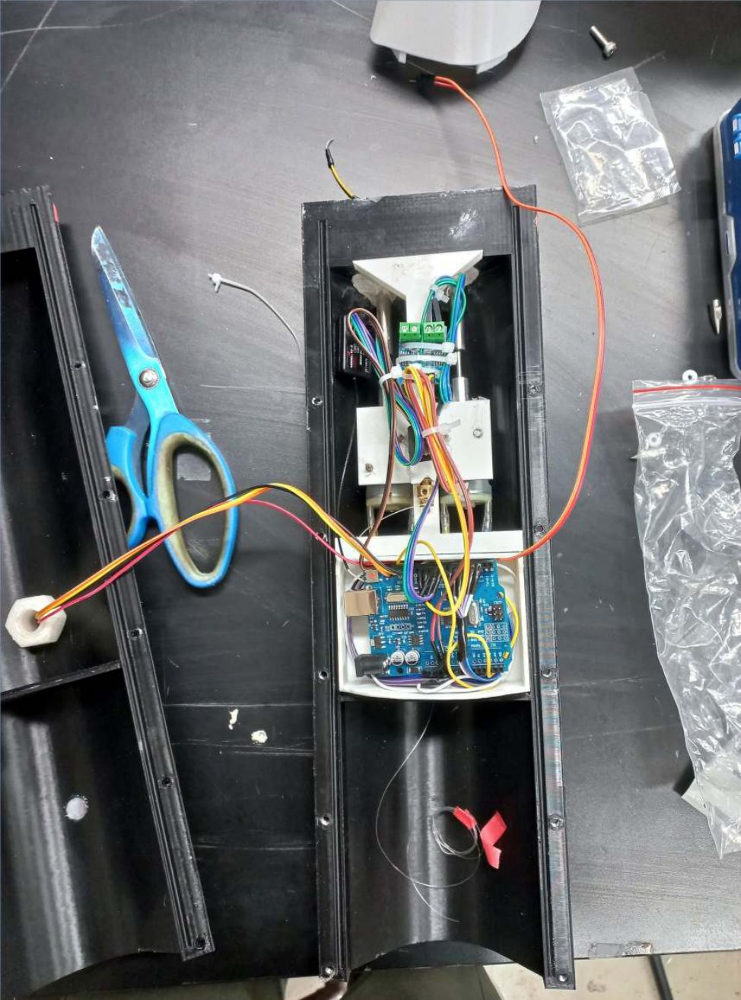

부트캠프 · 5인 팀 · 작업 제어(FSM) 담당(공동작업) · 26.07.30~26.08.12(2주) · Doosan M0609 · OnRobot RG2 · RealSense D435i · RTX 4060 Laptop(8GB)
이전 프로젝트에서 로봇이 이동할 좌표를 일일이 직접 가르쳐야 했던 불편을 줄이고자, 말로 지시하면 물체를 집어 정리하는 마트 계산대 작업을 목표로 삼았습니다.
상세 내용 · 대표 사례
말로 지시한 물체를 집어 옮겨 놓는다는 목표에 맞춰, 저는 작업 제어 단계를 정하고 사람이 손을 넣으면 멈추고 다시 계획하는 장애물 우회 동작을 연결해 팀원들과 실기로 확인했습니다. 제목의 VLA는 팀이 판단 계층에 붙인 이름으로, 카메라 인식과 자연어 지시로 집을 물체와 놓을 곳을 정하고 실제 로봇 이동은 단계별 순서를 관리하는 작업 제어가 맡습니다. 팀은 물체 형상을 보고 집을 자세를 스스로 찾게 했고, 저는 실물 로봇 손의 규격 차이를 직접 측정해 맞췄습니다. 말로 지시한 물체를 집어 옮겨 놓는다는 목표에 맞춰, 팀은 물체를 실물로 집어 목적지에 놓는 전 과정을 끝까지 이어 구현했습니다.
실기에 올린 그리퍼 모델이 실물 규격과 어긋나자, 저는 펜던트(로봇 조작기)로 접촉 지점까지 직접 재서 코드에 반영하며 실물 치수는 다시 재서 맞춰야 한다는 점을 익혔습니다. 시뮬레이션에서는 정상이던 그리퍼 모델이 실기에 올리자 실물 규격과 어긋났습니다. 저는 펜던트로 그리퍼를 천천히 내려 접촉 지점까지 직접 재고 그 차이를 그리퍼 코드에 반영하며, 검증된 모델이라도 실물 치수는 다시 재서 맞춰야 한다는 점을 익혔습니다.
진행 단계 · 본인 담당 · 키워드
- 파지 모델 도입 제안
- 체커보드 평평함 보정과 좌표 캘리브레이션
- 실물 그리퍼 실측 보정
- 단일 GPU 메모리 조정
- 로봇 제어 일원화와 시스템 통합
본인 담당 (공동작업)
- VLA 작업 지시 전달 및 디버깅·모니터링을 위한 FSM 상태 구분과 감지 실패 예외 처리 연동(공동작업)
- GPU 메모리 대응(파지 자세 생성 모델 GraspGenX 후보 수 조정·물체 인식 모델 YOLO 노드 누적 정리)
- 실물 그리퍼 치수를 직접 재서 파지 모델과 맞춤
- 구동 중 사람이 손을 넣으면 멈추고 다시 계획하는 동작 연결
키워드- 작업 제어 FSM
- 장애물 재계획 연결
- 실물 그리퍼 보정
- 시스템 통합
과정 자세히 보기 → · ▶ 1분 시연 영상 · 코드

졸업프로젝트 · 3인 팀 · 차동 제어·회로 구성 담당 · 2학기 PM · 24.08~25.08 · Arduino Uno
상용 수난 구조장비는 비싸고 다루기 어려워 비전문가가 바로 쓰기 힘들다는 문제에서 출발해, 물에 던지면 열원을 찾아 익수자에게 스스로 다가가는 저비용 구명보트와 발사장치를 목표로 삼았습니다.
상세 내용 · 대표 사례
팀은 착수 충격을 견디고 단순하게 제어할 수 있도록 좌우 모터의 출력 차이로 방향을 바꾸는 방식을 택했고, 저는 센서가 찾은 가장 뜨거운 방향으로 좌우 모터 출력을 달리 주고 조종 신호가 들어오면 수동 조종으로 전환되도록 제어와 회로를 맡았습니다. 비전문가도 현장에서 바로 활용할 수 있는 구명 장비라는 목표에 맞춰, 열원을 따라가는 보트와 발사장치 시제품을 완성했습니다.
팀은 착수 충격에 견디고 아두이노로 제어하기 쉬운 방식을 찾아 회의에서 구동방식 후보들을 비교한 끝에, 일반 DC 모터 2개에 샤프트를 연결하고 좌우 모터 출력을 달리해 방향을 트는 차동 조향을 택했습니다. 저는 아두이노로 좌우 모터를 돌리는 제어와 회로 구성을 맡았고, 열화상 센서 처리는 팀원과 함께했습니다. 보트는 발사장치로 물에 던져 넣기 때문에 떨어질 때의 충격에 견디고, 아두이노로 제어하기 쉬우면서 충분한 추진과 조향을 내는 구동 방식이 필요했습니다. 구동방식을 정하는 회의에서 후보마다 걸리는 점을 비교했습니다.
- 프로펠러 하나와 방향타(키): 물에 떨어질 때의 충격으로 키가 부러질 위험
- BLDC 모터: 아두이노로 제어하기 까다로움
- 방수 모터: 성능이 떨어짐
그래서 일반 DC 모터 2개에 샤프트를 연결하고, 좌우 모터 출력을 달리해 방향을 트는 차동 조향을 택했습니다.
팀은 초기 아이디어 단계에서 교내 산학연 캡스톤디자인 아이디어 최우수상을 받았고, 이후 제작비 약 51만 원으로 완성해 교내 졸업작품 경진대회 장려상을 받았습니다.
진행 단계 · 본인 담당 · 키워드
- 구동 방식 결정과 좌우 모터 차동 제어
- 부품별 코드 점검과 회로의 단일 보드 통합
- 시제품 한계 분석과 2차 개선
본인 담당
- 좌우 DC 모터 차동 제어
- 아두이노 회로 구성
- 설계보고서 문서화
- 두 번째 학기 PM(프로젝트 진행 관리)
키워드- DC 모터 차동 제어
- 열화상 센서 추적
- 자율·RC 수동 전환
과정 자세히 보기 → · 프로젝트 기록